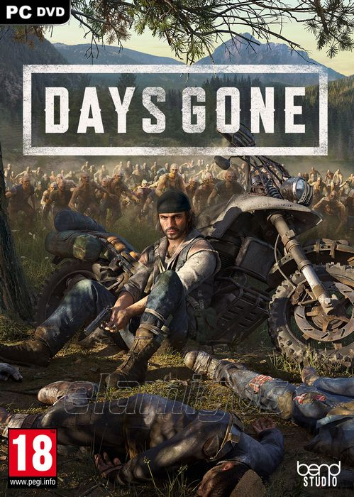

Days Gone 51.2 GB
Género: Survival, Mundo abierto, Acción
Lucha y recorre un Estados Unidos pospandémico letal. Ponte en la piel
de Deacon St. John, un errante cazarrecompensas que recorre la carretera
rota luchando por su supervivencia mientras busca una razón para seguir
viviendo en este juego de acción y aventura de mundo abierto.
.